Our first event of the year took place at Maker Faire, where we were invited to programme a stage for the two days of the festival. Our plan was to have an artist on each day who would talk about their work in a slot in the morning and then perform in the afternoon. As it worked out, we just ran the whole of each day as a drop-in session, for people to come and ask questions etc…with a performance in the afternoon.
For this If Wet we invited the wonderful Graham Dunning back with his Mechanical Techno set-up and Paul Granjon with his musical robots. They both went down a storm.
Thank you to our artists, all who attended and to Maker Faire for being such wonderful hosts!
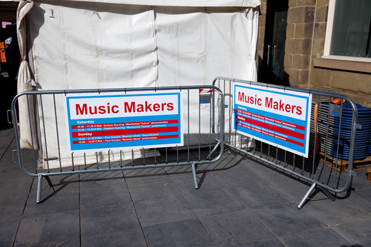
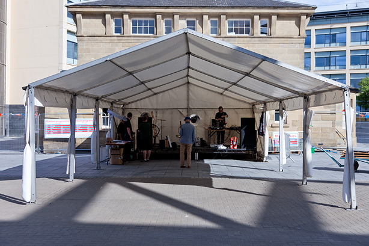

Day One featured Graham Dunning. It was wet and cold, and we were outdoors…but the show still went on!
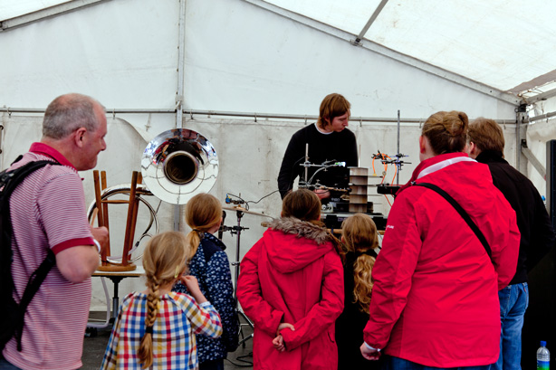

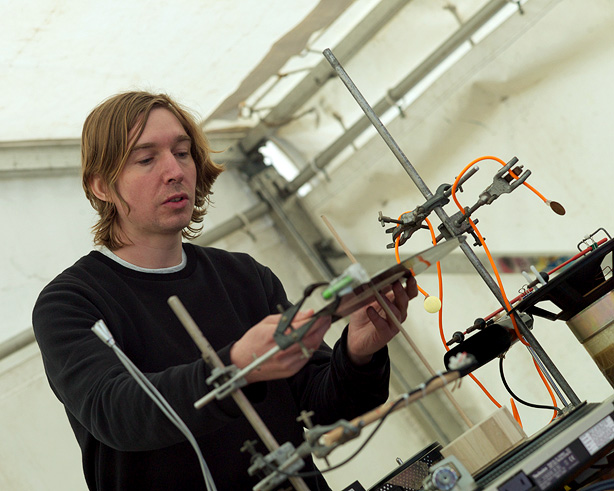
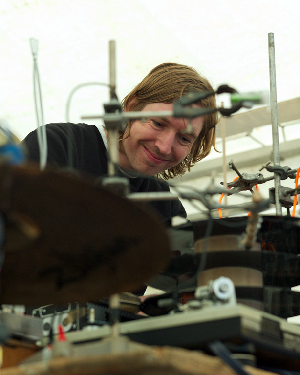
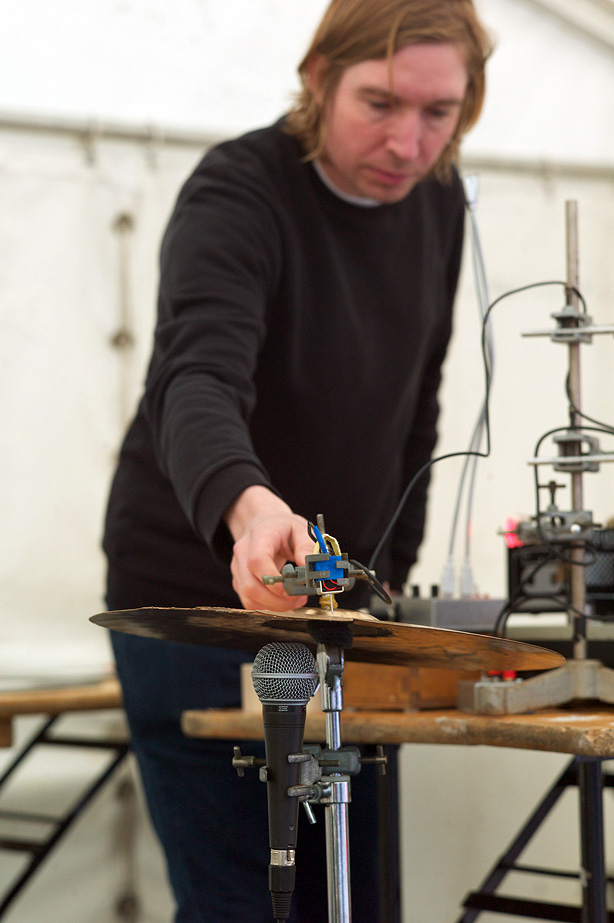
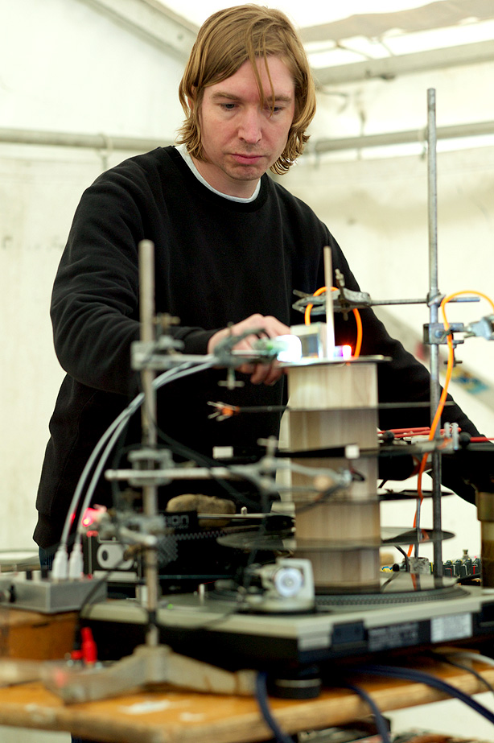
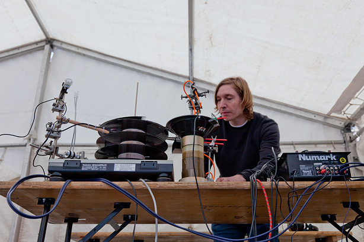

Day Two was Paul’s day, and the sun had come out. He played his wonky dance music to an appreciative crowd.
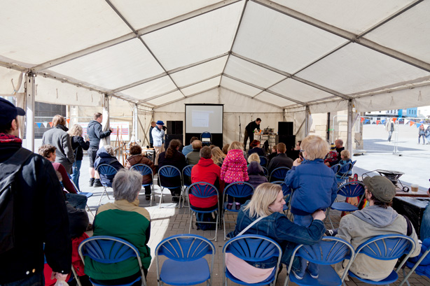
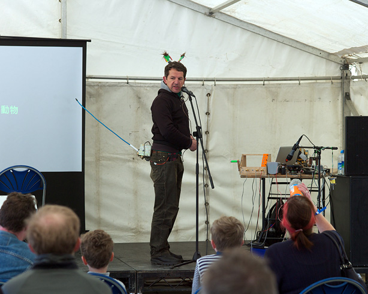
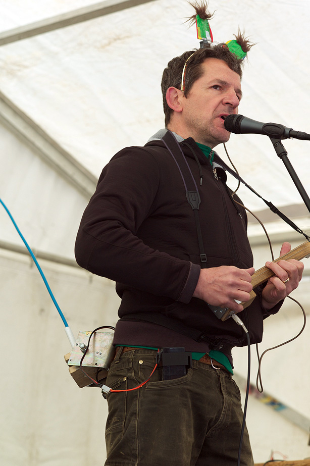
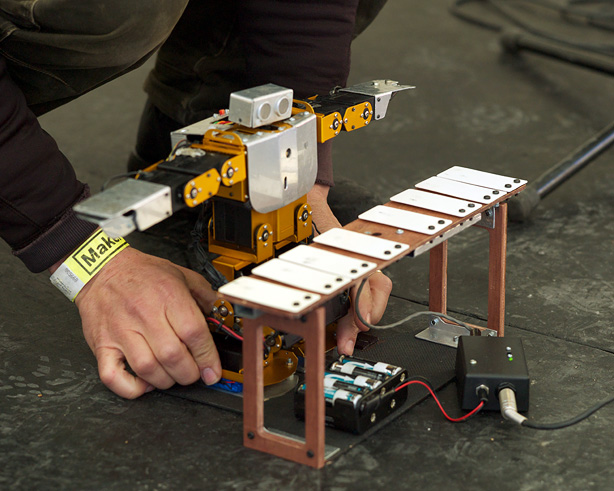
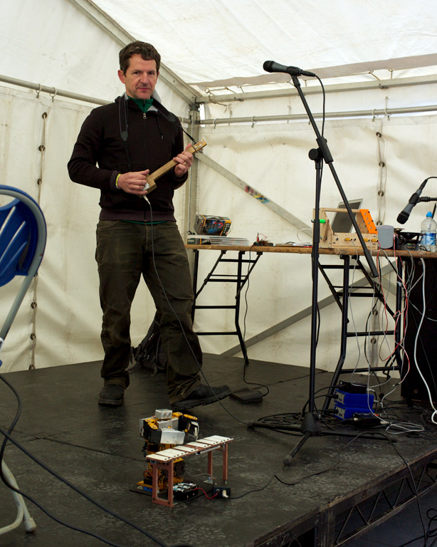

Once again, huge thanks to our wonderful artists, audience and to Maker Faire!